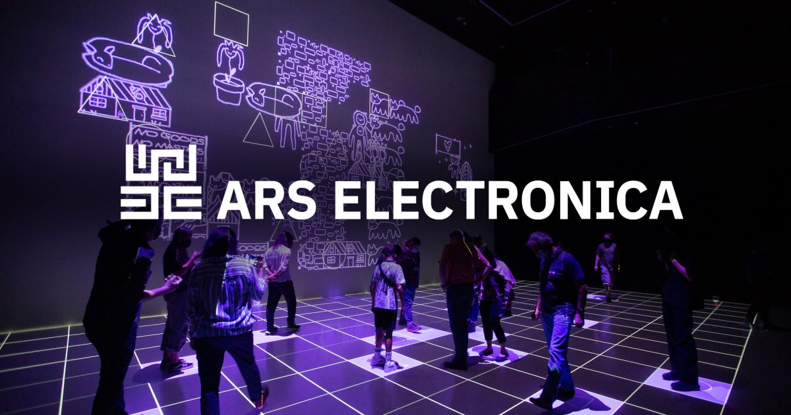
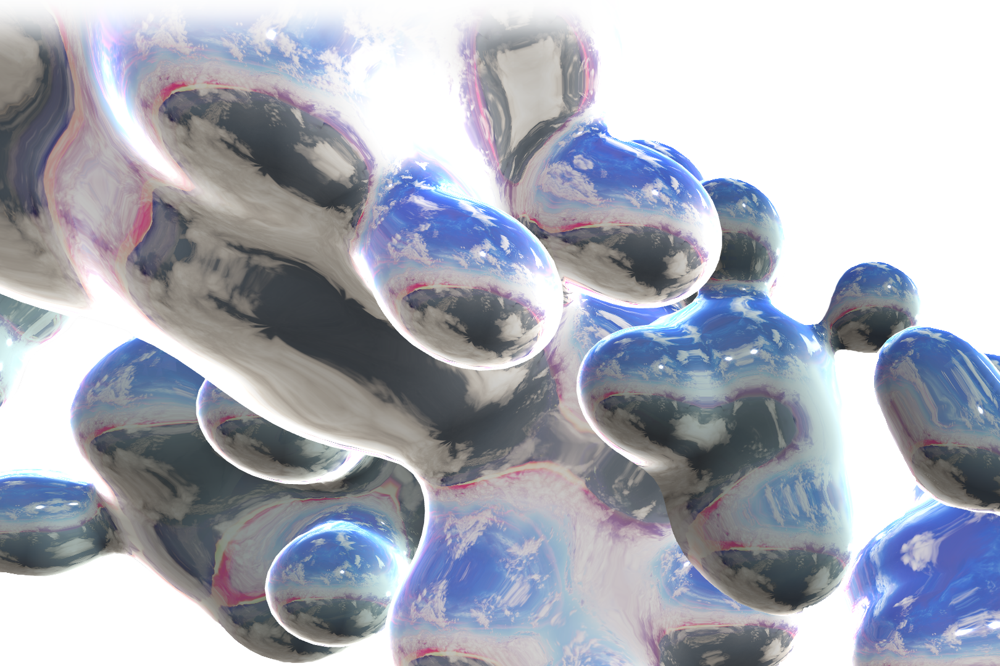

Pero antes, un poco de contexto...
Gerfried Stocker y "El arte del mañana"

¿Quién es Gerfried Stocker?
- Artista mediático y músico.
- Fundador de “X-space” en 1991, equipo para realizar proyectos interdisciplinarios.
- Director Artístico del Ars Electronica Festival desde el año 1995, y a partir del 2004 ha estado encargado del desarrollo de un programa para relaciones internacionales.
- Ha sido invitado para exponer en numerosos congresos internacionales, también es solicitado como consultor en el área de creatividad, gestión, e innovación de empresas.
Paper "El arte de mañana"
El arte de mañana es el arte electrónico, el arte como ensayo del futuro. ¿Qué factores o circunstancias determinarán el arte de mañana? ¿Cómo responderá el arte a las cuestiones sociales más importantes?
La tecnología es algo que está dentro de la normalidad, por lo que las nuevas dudas pasaron a ser si es que el arte digital seguirá teniendo este carácter de “vanguardia” sin transformarse en un elemento ordinario del día a día.
Las tecnologías digitales potencian la cooperación y competencia de ideas, capacidades y talentos por lo que de aquí nace un nuevo tipo de arte, caracterizado por la experiencia y experimentación.
En el paper se propone cambiar el enfoque de un festival, que este pueda abrir oportunidades a procesos artísticos o tecnológicos, poniendo el foco en el futuro:
Ars Electronica representa un acercamiento a lo que está pasando en el arte, la tecnología y la sociedad. Un festival, un museo del futuro, dedicado completamente al arte y la ciencia, acogiendo experimentos y obras en progreso. Se le dió una mayor importancia a este “museo del futuro” como lugar de producción y con el objetivo lograr que el arte sea un encuentro con el público y que estos puedan interactuar.
_
“Dreaming Beyond AI", Nushin Yazdani
Nushin Isabelle Yazdani es diseñadora de interacción y transformación, artista e investigadora de inteligencia artificial. En su trabajo se dedica a examinar la interconexión de las tecnologías digitales y la justicia social, además dela inteligencia artificial y la discriminación, siempre desde una perspectiva feminista interseccional.
En el Education Innovation Lab, Nushin trabaja para transformar el sistema educativo y crear métodos de aprendizaje innovadores.
Es profesora en diferentes universidades y parte de Design Justice Network dgtl fmnsm, un colectivo interdisciplinario que trata sobre las oportunidades emancipatorias que ofrecen la tecnología y el feminismo.
Proyecto, "Dreaming Beyond Al"
“Dreaming Beyond AI”, proyecto multidisciplinario y colaborativo que se basa en la web reuniendo a investigadores, artistas, legisladores y activistas para dar vida a nuevas narrativas y perspectivas en torno a las tecnologías de IA.
Conceptualizado y comisariado por Nushin Yazdani y Raziye Buse Çetin, el proyecto se ha realizado en cooperación con ifa (Institut für Auslandsbeziehungen).
El principal objetivo del proyecto de Nushin es dar a conocer el impacto de las tecnologías de IA en la inequidad, junto con observar de manera crítica las principales narrativas de IA, así como las visiones impuestas del futuro.
Diseñada por Iyo Bisseck, la web le ofrece al usuario una manera distinta de experimentar distintas formas del conocimiento crítico y la creatividad.
Se exploran temas como la inteligencia, la visión y el sentimiento de las máquinas, los patrones, el rechazo, el planeta Tierra y la estructura exterior a partir de las diferentes contribuciones.
Buscando descifrar conceptos equivocados populares y los fundamentos defectuosos de la IA, como tecnología, negocios, disciplina científica e ideología, para así crear nuevos caminos desde una perspectiva feminista y descolonial que a su vez sepan convivir con la libertad individual y colectiva mientras se preserva la tierra.